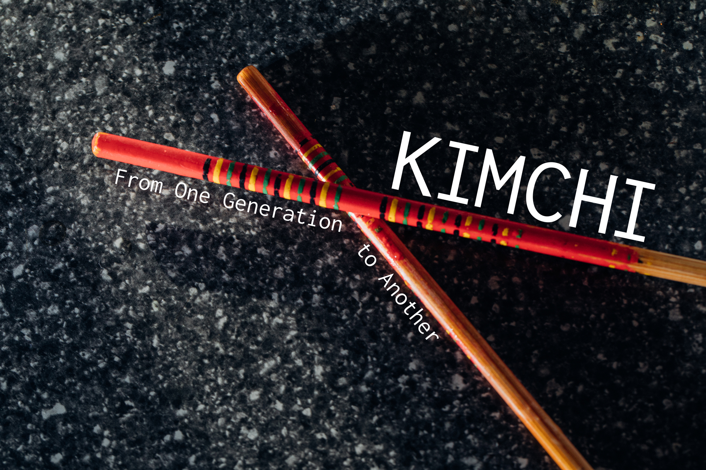
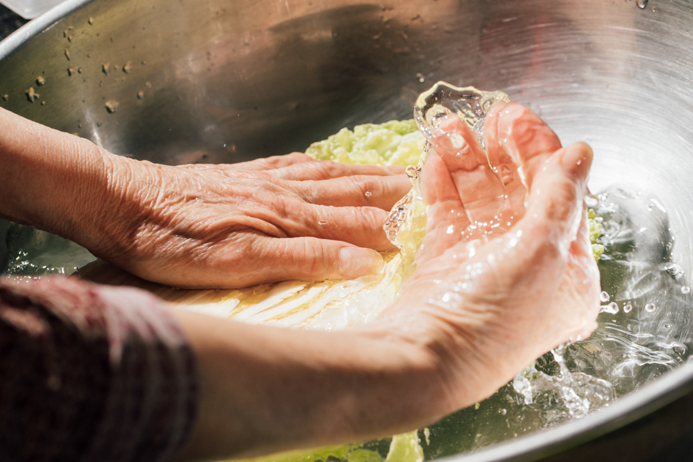
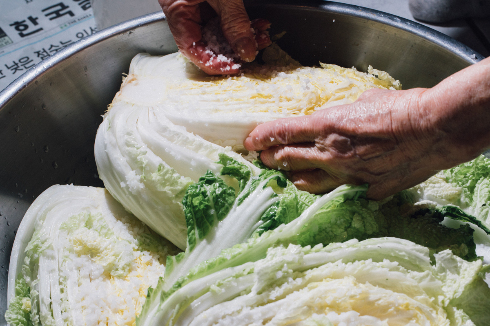
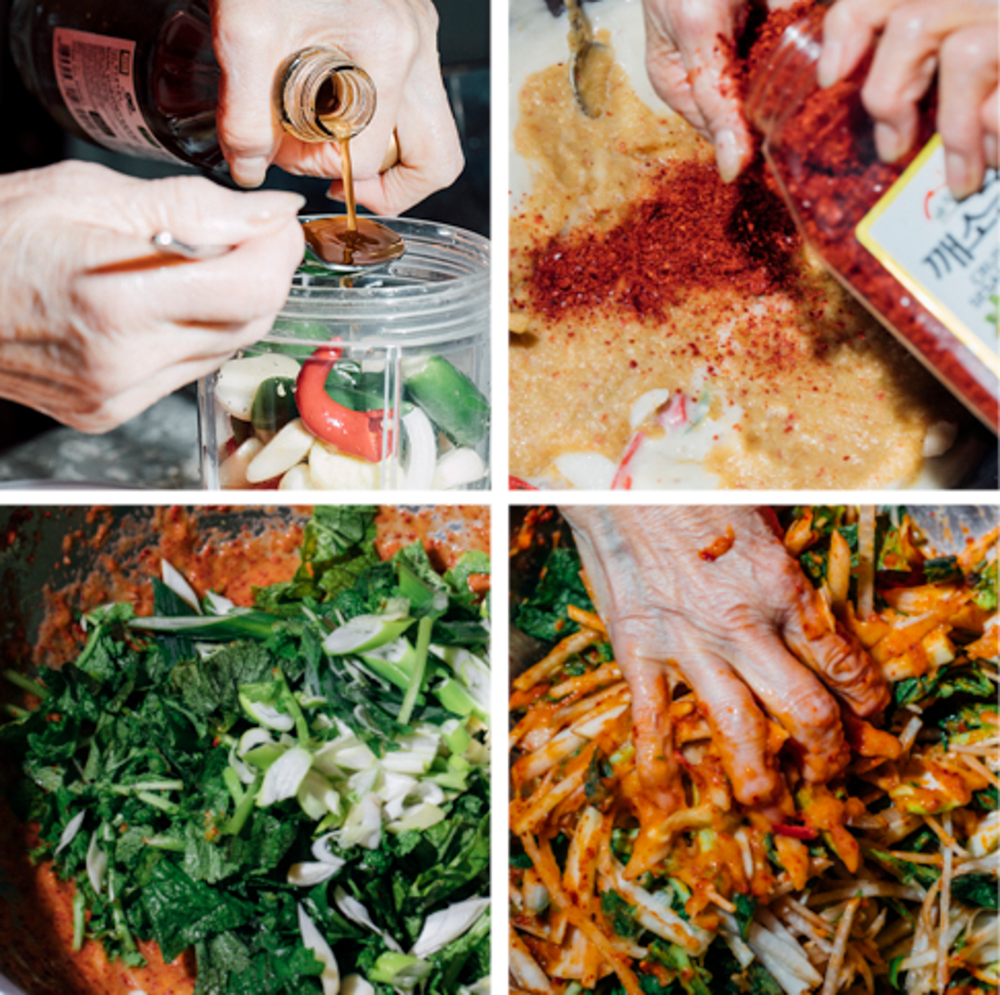
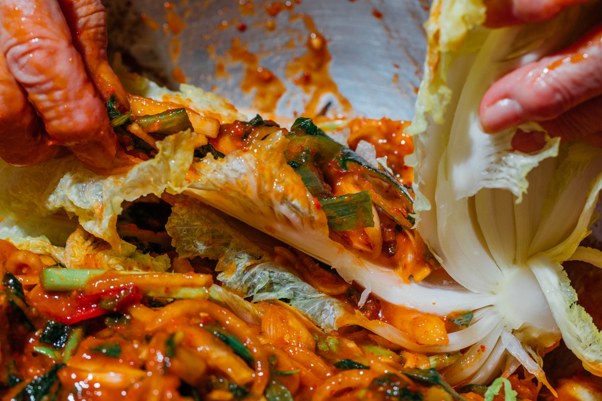
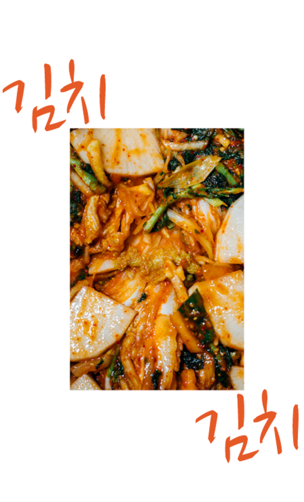

KIMCHI

After hearing that my food is stinky many times, I beg and beg my parents to get me a “normal” lunch. Years later, high school hits. I post different types of Korean food onto my social media and people message me saying, “ew, what is that?” “that looks disgusting” “is that dog food?” This was what it was like growing up as an Asian American, but you wouldn’t know this if you aren’t.
Fast forward a couple years, and all these trends with restaurants are starting to pop up everywhere. I see on their menu everything I grew up with, but not in traditional settings. Everything has been Americanized and transformed to make it “trendier.” All of the traditional steps that one has to go through to get the perfect dish aren’t used.
“This was what it was like growing up as an Asian American, but you wouldn’t know this if you aren’t.”


Just as Americans cherish their grandma’s homemade apple pie recipe, immigrants from Asia carried their traditions to North America. They spread their traditions, and eventually these made their way into restaurants attempting to emulate authentic taste and style. These restaurants think that they can just slap on the word “Korean” in front of various vegetables and call it a “Korean dish.”

Each step requires precision and gentleness. With my grandma, brining the napa cabbage took multiple days so that the leaves could wilt and then be washed out. She also added other vegetables, including mustard greens, Korean radish, and long green onion, to the napa cabbage. The combination of each was altered from the original recipe to fit what she loved most. She then used shrimp, Korean red pepper flakes, fish sauce, Korean pear, onions, and apples all blended together to create the seasoning. To create a sweeter taste to the dish, she boiled together onion skins, shrimp shells, and long green onions. She preferred this over plain water. The Korean red pepper flakes are what gives kimchi its beautiful vibrance and distinctive red hue.


My family’s recipe will be passed down to me. I love kimchi since it brings me comfort. This is partly due to the nostalgia of the dish. I am excited that I will be able to share this experience with others, given the trendy culture around kimchi. I hope to educate the future generation on how best to prepare this dish.
